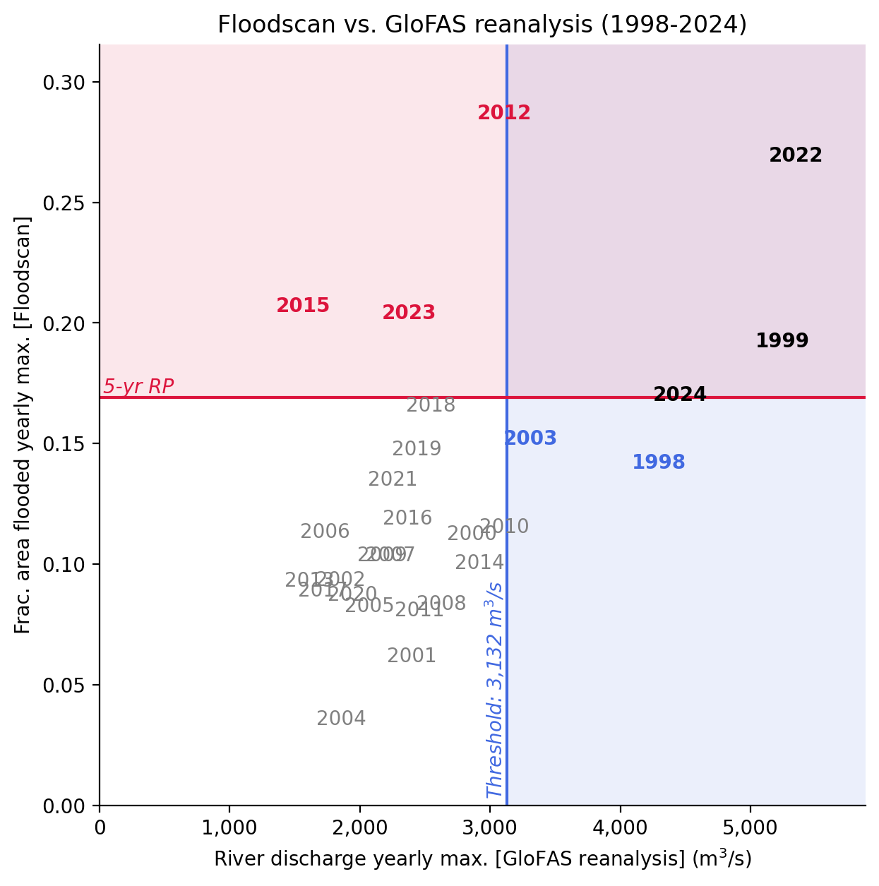
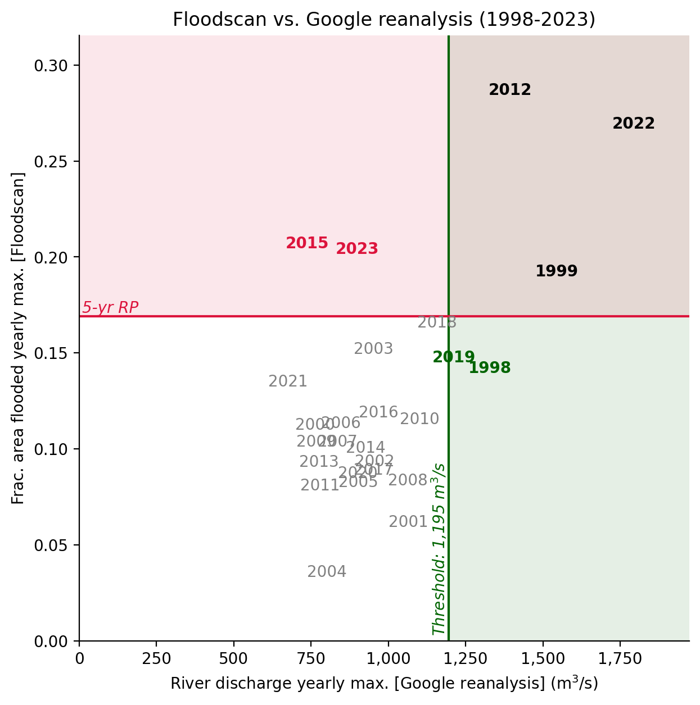
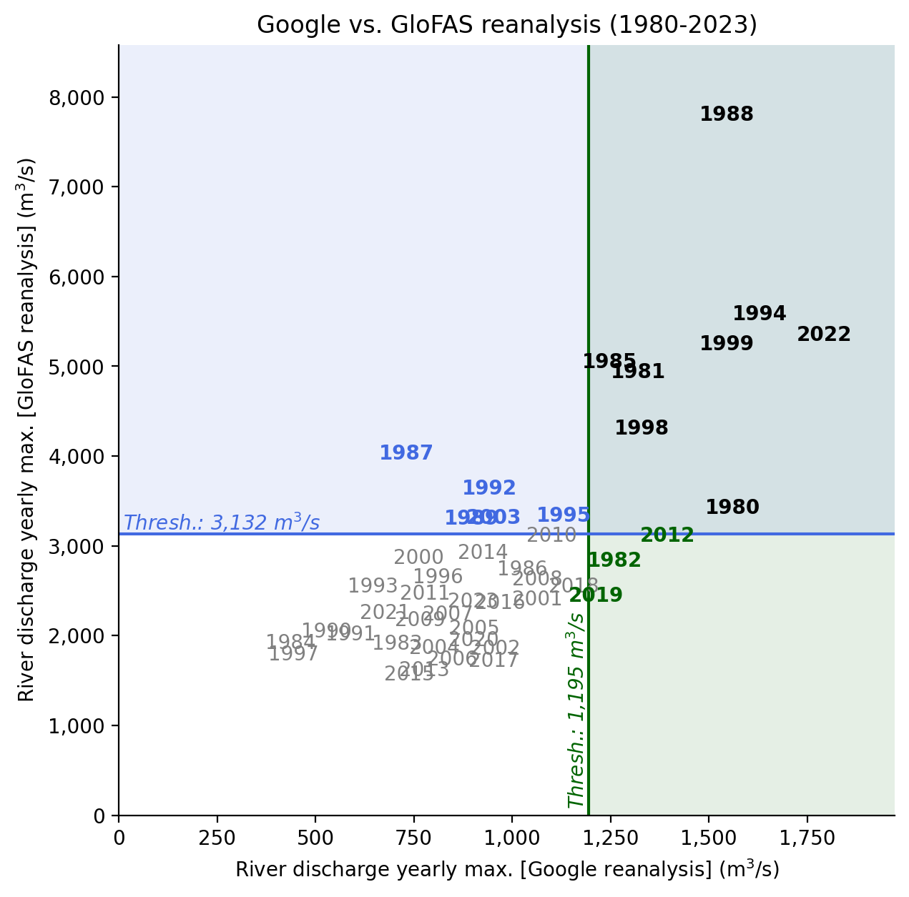
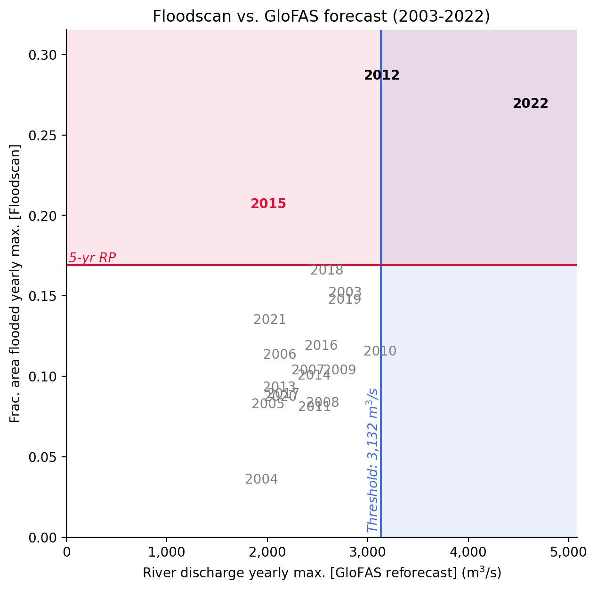
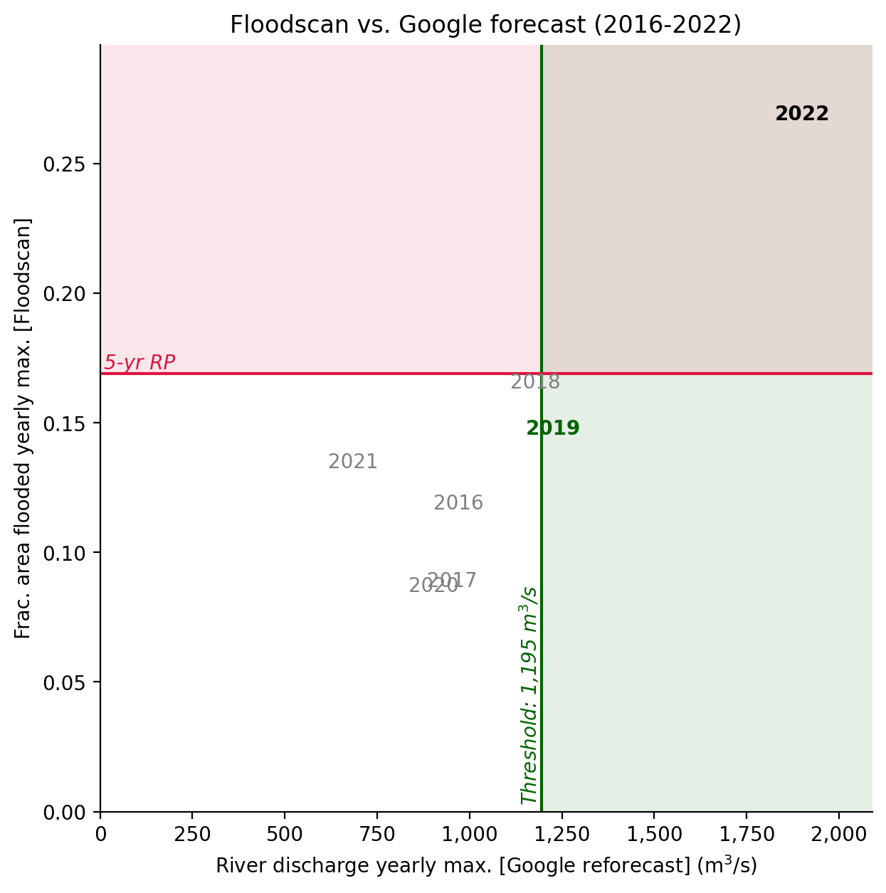
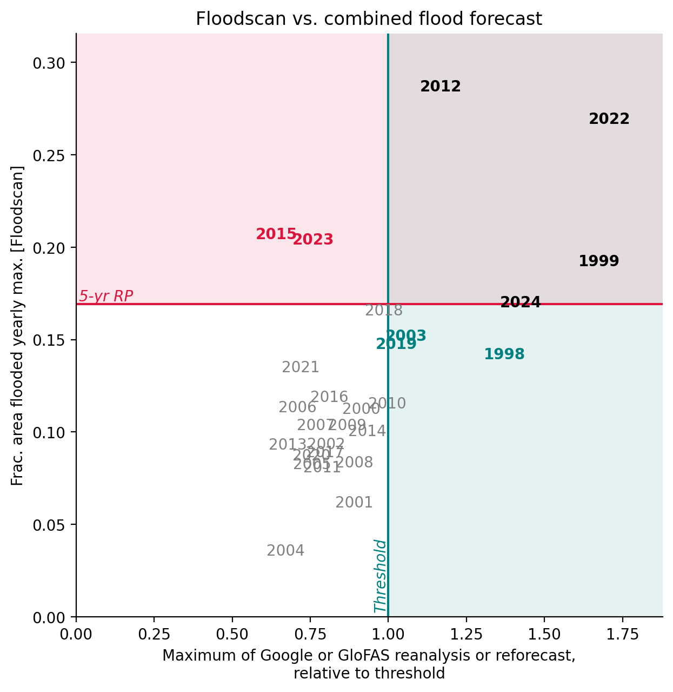

Code
%load_ext jupyter_black
%load_ext autoreload
%autoreload 2Generate various plots to show which years triggered with which sources.
%load_ext jupyter_black
%load_ext autoreload
%autoreload 2import ocha_stratus as stratus
import matplotlib.pyplot as plt
import matplotlib.ticker as mticker
import pandas as pd
import numpy as np
from src.datasources import grrr, glofas
from src.constants import *gf_thresh = 3132
gf_lt_max = 5
grrr_thresh = 1195# df_ref_ens = pd.read_parquet(
# glofas.GF_PROC_DIR / "wuroboki_glofas_reforecast_ens.parquet"
# )
# just use temp to avoid syncing Drive
df_ref_ens = pd.read_parquet("temp/wuroboki_glofas_reforecast_ens.parquet")df_gf_ref = (
df_ref_ens.groupby(["valid_time", "leadtime"])["dis24"]
.mean()
.reset_index()
)df_gf_ref_peaks = (
df_gf_ref.groupby([df_gf_ref["valid_time"].dt.year, "leadtime"])["dis24"]
.max()
.reset_index()
.rename(columns={"valid_time": "year", "dis24": "dis24_f"})
)df_gf_ref_peaks_any_lt = (
df_gf_ref_peaks[df_gf_ref_peaks["leadtime"] <= gf_lt_max]
.groupby("year")["dis24_f"]
.max()
.reset_index()
)df_gf_rea = glofas.load_glofas_reanalysis(station_name="wuroboki")df_gf_rea_peaks = (
df_gf_rea.groupby(df_gf_rea["time"].dt.year)["dis24"]
.max()
.reset_index()
.rename(columns={"time": "year", "dis24": "dis24_a"})
)ds_rf = grrr.load_reforecast()
df_grrr_ref = grrr.process_reforecast(ds_rf)/Users/tdowning/OCHA/repos/ds-aa-nga-flooding/src/datasources/grrr.py:17: FutureWarning: In a future version of xarray decode_timedelta will default to False rather than None. To silence this warning, set decode_timedelta to True, False, or a 'CFTimedeltaCoder' instance.
return xr.open_zarr(df_grrr_ref_peaks = (
df_grrr_ref[df_grrr_ref["valid_time"].dt.year < 2023]
.groupby([df_grrr_ref["valid_time"].dt.year, "leadtime"])["streamflow"]
.max()
.reset_index()
.rename(columns={"valid_time": "year", "streamflow": "streamflow_f"})
)df_grrr_ref_peaks_any_lt = (
df_grrr_ref_peaks.groupby("year")["streamflow_f"].max().reset_index()
)ds_ra = grrr.load_reanalysis()
df_grrr_rea = grrr.process_reanalysis(ds_ra)df_grrr_rea_peaks = (
df_grrr_rea.groupby(df_grrr_rea["valid_time"].dt.year)["streamflow"]
.max()
.reset_index()
.rename(columns={"valid_time": "year", "streamflow": "streamflow_a"})
)df_fs_raw = stratus.load_parquet_from_blob(
f"{PROJECT_PREFIX}/processed/floodscan/fs_benue_pixels_1998_2024.parquet"
)
df_fs = (
df_fs_raw.groupby("date")["SFED"]
.mean()
.reset_index()
.rename(columns={"date": "valid_time"})
)df_fs_peaks = (
df_fs.groupby(df_fs["valid_time"].dt.year)["SFED"].max().reset_index()
)df_fs_peaks = df_fs_peaks.rename(columns={"valid_time": "year"})df_compare = (
df_fs_peaks.merge(df_gf_rea_peaks, how="outer")
.merge(df_gf_ref_peaks_any_lt, how="outer")
.merge(df_grrr_rea_peaks, how="outer")
.merge(df_grrr_ref_peaks_any_lt, how="outer")
)for thresh, ind in [(grrr_thresh, "streamflow"), (gf_thresh, "dis24")]:
for af in ["a", "f"]:
df_compare[f"{ind}_{af}_rel"] = df_compare[f"{ind}_{af}"] / threshdf_compare["max_rel"] = df_compare[
[x for x in df_compare.columns if "rel" in x]
].max(axis=1)Just have a look at all the yearly peaks:
df_compare.sort_values("dis24_a", ascending=False)| year | SFED | dis24_a | dis24_f | streamflow_a | streamflow_f | streamflow_a_rel | streamflow_f_rel | dis24_a_rel | dis24_f_rel | max_rel | |
|---|---|---|---|---|---|---|---|---|---|---|---|
| 9 | 1988 | NaN | 7801.156250 | NaN | 1545.979370 | NaN | 1.293707 | NaN | 2.490791 | NaN | 2.490791 |
| 15 | 1994 | NaN | 5575.781250 | NaN | 1629.851074 | NaN | 1.363892 | NaN | 1.780262 | NaN | 1.780262 |
| 43 | 2022 | 0.269161 | 5347.171875 | 4619.898438 | 1793.780396 | 1899.741821 | 1.501071 | 1.589742 | 1.707271 | 1.475063 | 1.707271 |
| 20 | 1999 | 0.192214 | 5244.656250 | NaN | 1545.005493 | NaN | 1.292892 | NaN | 1.674539 | NaN | 1.674539 |
| 6 | 1985 | NaN | 5046.875000 | NaN | 1247.214722 | NaN | 1.043694 | NaN | 1.611390 | NaN | 1.611390 |
| 2 | 1981 | NaN | 4933.351562 | NaN | 1321.095093 | NaN | 1.105519 | NaN | 1.575144 | NaN | 1.575144 |
| 45 | 2024 | 0.169988 | 4459.265625 | NaN | NaN | NaN | NaN | NaN | 1.423776 | NaN | 1.423776 |
| 19 | 1998 | 0.142014 | 4300.250000 | NaN | 1328.853149 | NaN | 1.112011 | NaN | 1.373004 | NaN | 1.373004 |
| 8 | 1987 | NaN | 4023.500000 | NaN | 730.906738 | NaN | 0.611637 | NaN | 1.284642 | NaN | 1.284642 |
| 13 | 1992 | NaN | 3635.500000 | NaN | 941.745239 | NaN | 0.788071 | NaN | 1.160760 | NaN | 1.160760 |
| 1 | 1980 | NaN | 3420.695312 | NaN | 1559.987427 | NaN | 1.305429 | NaN | 1.092176 | NaN | 1.305429 |
| 16 | 1995 | NaN | 3331.929688 | NaN | 1131.418945 | NaN | 0.946794 | NaN | 1.063835 | NaN | 1.063835 |
| 24 | 2003 | 0.151862 | 3312.015625 | 2776.615723 | 953.153015 | NaN | 0.797618 | NaN | 1.057476 | 0.886531 | 1.057476 |
| 10 | 1989 | NaN | 3301.734375 | NaN | 895.918640 | NaN | 0.749723 | NaN | 1.054194 | NaN | 1.054194 |
| 33 | 2012 | 0.286909 | 3110.078125 | 3142.276611 | 1394.855469 | NaN | 1.167243 | NaN | 0.993001 | 1.003281 | 1.167243 |
| 31 | 2010 | 0.115183 | 3109.257812 | 3121.492188 | 1100.995361 | NaN | 0.921335 | NaN | 0.992739 | 0.996645 | 0.996645 |
| 35 | 2014 | 0.100249 | 2918.125000 | 2467.003174 | 926.234802 | NaN | 0.775092 | NaN | 0.931713 | 0.787677 | 0.931713 |
| 21 | 2000 | 0.112231 | 2863.234375 | NaN | 762.573181 | NaN | 0.638137 | NaN | 0.914187 | NaN | 0.914187 |
| 3 | 1982 | NaN | 2827.750000 | NaN | 1260.010864 | NaN | 1.054402 | NaN | 0.902858 | NaN | 1.054402 |
| 7 | 1986 | NaN | 2735.359375 | NaN | 1026.430054 | NaN | 0.858937 | NaN | 0.873359 | NaN | 0.873359 |
| 17 | 1996 | NaN | 2650.734375 | NaN | 810.592346 | NaN | 0.678320 | NaN | 0.846339 | NaN | 0.846339 |
| 29 | 2008 | 0.083352 | 2627.976562 | 2551.941406 | 1063.593872 | NaN | 0.890037 | NaN | 0.839073 | 0.814796 | 0.890037 |
| 39 | 2018 | 0.165637 | 2547.906250 | 2593.005371 | 1157.043457 | 1178.059326 | 0.968237 | 0.985824 | 0.813508 | 0.827907 | 0.985824 |
| 14 | 1993 | NaN | 2544.750000 | NaN | 645.716675 | NaN | 0.540349 | NaN | 0.812500 | NaN | 0.812500 |
| 32 | 2011 | 0.080652 | 2461.625000 | 2469.128906 | 778.979004 | NaN | 0.651865 | NaN | 0.785959 | 0.788355 | 0.788355 |
| 40 | 2019 | 0.147553 | 2440.054688 | 2772.688965 | 1212.237061 | 1226.603638 | 1.014424 | 1.026447 | 0.779072 | 0.885277 | 1.026447 |
| 22 | 2001 | 0.061692 | 2399.468750 | NaN | 1064.437988 | NaN | 0.890743 | NaN | 0.766114 | NaN | 0.890743 |
| 0 | 1979 | NaN | 2392.945312 | NaN | NaN | NaN | NaN | NaN | 0.764031 | NaN | 0.764031 |
| 44 | 2023 | 0.203958 | 2379.328125 | NaN | 900.323486 | NaN | 0.753409 | NaN | 0.759683 | NaN | 0.759683 |
| 37 | 2016 | 0.118837 | 2364.773438 | 2537.560059 | 969.453369 | 969.453369 | 0.811258 | 0.811258 | 0.755036 | 0.810204 | 0.811258 |
| 42 | 2021 | 0.134848 | 2253.296875 | 2024.487549 | 676.297546 | 684.538391 | 0.565939 | 0.572835 | 0.719443 | 0.646388 | 0.719443 |
| 28 | 2007 | 0.103586 | 2235.781250 | 2407.434326 | 836.369751 | NaN | 0.699891 | NaN | 0.713851 | 0.768657 | 0.768657 |
| 30 | 2009 | 0.103484 | 2169.906250 | 2719.395996 | 766.465027 | NaN | 0.641393 | NaN | 0.692818 | 0.868262 | 0.868262 |
| 26 | 2005 | 0.082421 | 2077.328125 | 2008.734375 | 903.818298 | NaN | 0.756333 | NaN | 0.663259 | 0.641358 | 0.756333 |
| 11 | 1990 | NaN | 2046.000000 | NaN | 527.189819 | NaN | 0.441163 | NaN | 0.653257 | NaN | 0.653257 |
| 12 | 1991 | NaN | 2013.921875 | NaN | 589.804138 | NaN | 0.493560 | NaN | 0.643015 | NaN | 0.643015 |
| 41 | 2020 | 0.087079 | 1946.828125 | 2129.044434 | 901.907959 | 901.907959 | 0.754735 | 0.754735 | 0.621593 | 0.679772 | 0.754735 |
| 5 | 1984 | NaN | 1913.437500 | NaN | 436.359558 | NaN | 0.365154 | NaN | 0.610932 | NaN | 0.610932 |
| 4 | 1983 | NaN | 1910.343750 | NaN | 707.293579 | NaN | 0.591877 | NaN | 0.609944 | NaN | 0.609944 |
| 25 | 2004 | 0.035491 | 1856.578125 | 1940.969482 | 801.753296 | NaN | 0.670923 | NaN | 0.592777 | 0.619722 | 0.670923 |
| 23 | 2002 | 0.093438 | 1854.218750 | NaN | 956.879333 | NaN | 0.800736 | NaN | 0.592024 | NaN | 0.800736 |
| 18 | 1997 | NaN | 1788.640625 | NaN | 444.703888 | NaN | 0.372137 | NaN | 0.571086 | NaN | 0.571086 |
| 27 | 2006 | 0.113096 | 1733.757812 | 2123.482910 | 847.273560 | NaN | 0.709016 | NaN | 0.553563 | 0.677996 | 0.709016 |
| 38 | 2017 | 0.088970 | 1717.898438 | 2158.274902 | 952.680115 | 952.680115 | 0.797222 | 0.797222 | 0.548499 | 0.689104 | 0.797222 |
| 34 | 2013 | 0.092912 | 1611.937500 | 2122.123535 | 775.987488 | NaN | 0.649362 | NaN | 0.514667 | 0.677562 | 0.677562 |
| 36 | 2015 | 0.206910 | 1563.804688 | 2010.931274 | 738.006592 | NaN | 0.617579 | NaN | 0.499299 | 0.642060 | 0.642060 |
fs_5yr = df_compare["SFED"].quantile(1 - 1 / 5)
fs_3yr = df_compare["SFED"].quantile(1 - 1 / 3)fs_color = "crimson"
gf_color = "royalblue"
grrr_color = "darkgreen"def plot_yearly_maxima(x_col, y_col, **kwargs):
x_thresh = kwargs["x_thresh"]
x_color = kwargs["x_color"]
y_thresh = kwargs["y_thresh"]
y_color = kwargs["y_color"]
df_plot = df_compare[["year", x_col, y_col]].copy().set_index("year")
df_plot = df_plot.dropna()
print(df_plot.index.min(), df_plot.index.max())
xmax = df_plot[x_col].max() * 1.1
ymax = df_plot[y_col].max() * 1.1
fig, ax = plt.subplots(dpi=200, figsize=(7, 7))
ax.axvline(x_thresh, color=x_color)
ax.axvspan(x_thresh, xmax, facecolor=x_color, alpha=0.1)
ax.axhline(y_thresh, color=y_color)
ax.axhspan(y_thresh, ymax, facecolor=y_color, alpha=0.1)
for year, row in df_plot.iterrows():
fontweight = "bold"
if row[x_col] > x_thresh and row[y_col] > y_thresh:
color = "k"
elif row[x_col] > x_thresh:
color = x_color
elif row[y_col] > y_thresh:
color = y_color
else:
fontweight = "normal"
color = "grey"
ax.annotate(
year,
(row[x_col], row[y_col]),
color=color,
fontweight=fontweight,
va="center",
ha="center",
)
ax.annotate(
kwargs["y_thresh_text"],
(0, y_thresh),
color=y_color,
fontstyle="italic",
xytext=(2, 2),
textcoords="offset points",
)
ax.annotate(
kwargs["x_thresh_text"],
(x_thresh, 0),
rotation=90,
ha="right",
va="bottom",
color=x_color,
fontstyle="italic",
xytext=(0, 3),
textcoords="offset points",
)
ax.set_xlim((0, xmax))
ax.set_ylim((0, ymax))
ax.spines.top.set_visible(False)
ax.spines.right.set_visible(False)
return fig, axfig, ax = plot_yearly_maxima(
"dis24_a",
"SFED",
x_thresh=gf_thresh,
x_color=gf_color,
x_thresh_text=f"Threshold: {gf_thresh:,} m$^3$/s",
y_thresh=fs_5yr,
y_color=fs_color,
y_thresh_text="5-yr RP",
)
ax.xaxis.set_major_formatter(mticker.StrMethodFormatter("{x:,.0f}"))
ax.set_xlabel("River discharge yearly max. [GloFAS reanalysis] (m$^3$/s)")
ax.set_ylabel("Frac. area flooded yearly max. [Floodscan]")
ax.set_title("Floodscan vs. GloFAS reanalysis (1998-2024)")1998 2024Text(0.5, 1.0, 'Floodscan vs. GloFAS reanalysis (1998-2024)')
fig, ax = plot_yearly_maxima(
"streamflow_a",
"SFED",
x_thresh=grrr_thresh,
x_color=grrr_color,
x_thresh_text=f"Threshold: {grrr_thresh:,} m$^3$/s",
y_thresh=fs_5yr,
y_color=fs_color,
y_thresh_text="5-yr RP",
)
ax.xaxis.set_major_formatter(mticker.StrMethodFormatter("{x:,.0f}"))
ax.set_xlabel("River discharge yearly max. [Google reanalysis] (m$^3$/s)")
ax.set_ylabel("Frac. area flooded yearly max. [Floodscan]")
ax.set_title("Floodscan vs. Google reanalysis (1998-2023)")1998 2023Text(0.5, 1.0, 'Floodscan vs. Google reanalysis (1998-2023)')
fig, ax = plot_yearly_maxima(
"streamflow_a",
"dis24_a",
x_thresh=grrr_thresh,
x_color=grrr_color,
x_thresh_text=f"Thresh.: {grrr_thresh:,} m$^3$/s",
y_thresh=gf_thresh,
y_color=gf_color,
y_thresh_text=f"Thresh.: {gf_thresh:,} m$^3$/s",
)
ax.set_xlabel("River discharge yearly max. [Google reanalysis] (m$^3$/s)")
ax.set_ylabel("River discharge yearly max. [GloFAS reanalysis] (m$^3$/s)")
ax.xaxis.set_major_formatter(mticker.StrMethodFormatter("{x:,.0f}"))
ax.yaxis.set_major_formatter(mticker.StrMethodFormatter("{x:,.0f}"))
ax.set_title("Google vs. GloFAS reanalysis (1980-2023)")1980 2023Text(0.5, 1.0, 'Google vs. GloFAS reanalysis (1980-2023)')
fig, ax = plot_yearly_maxima(
"dis24_f",
"SFED",
x_thresh=gf_thresh,
x_color=gf_color,
x_thresh_text=f"Threshold: {gf_thresh:,} m$^3$/s",
y_thresh=fs_5yr,
y_color=fs_color,
y_thresh_text="5-yr RP",
)
ax.xaxis.set_major_formatter(mticker.StrMethodFormatter("{x:,.0f}"))
ax.set_xlabel("River discharge yearly max. [GloFAS reforecast] (m$^3$/s)")
ax.set_ylabel("Frac. area flooded yearly max. [Floodscan]")
ax.set_title("Floodscan vs. GloFAS forecast (2003-2022)")2003 2022Text(0.5, 1.0, 'Floodscan vs. GloFAS forecast (2003-2022)')
fig, ax = plot_yearly_maxima(
"streamflow_f",
"SFED",
x_thresh=grrr_thresh,
x_color=grrr_color,
x_thresh_text=f"Threshold: {grrr_thresh:,} m$^3$/s",
y_thresh=fs_5yr,
y_color=fs_color,
y_thresh_text="5-yr RP",
)
ax.xaxis.set_major_formatter(mticker.StrMethodFormatter("{x:,.0f}"))
ax.set_xlabel("River discharge yearly max. [Google reforecast] (m$^3$/s)")
ax.set_ylabel("Frac. area flooded yearly max. [Floodscan]")
ax.set_title("Floodscan vs. Google forecast (2016-2022)")2016 2022Text(0.5, 1.0, 'Floodscan vs. Google forecast (2016-2022)')
fig, ax = plot_yearly_maxima(
"max_rel",
"SFED",
x_thresh=1,
x_color="teal",
x_thresh_text="Threshold",
y_thresh=fs_5yr,
y_color=fs_color,
y_thresh_text="5-yr RP",
)
ax.set_xlabel(
"Maximum of Google or GloFAS reanalysis or reforecast,\n"
"relative to threshold"
)
ax.set_ylabel("Frac. area flooded yearly max. [Floodscan]")
ax.set_title("Floodscan vs. combined flood forecast")1998 2024Text(0.5, 1.0, 'Floodscan vs. combined flood forecast')